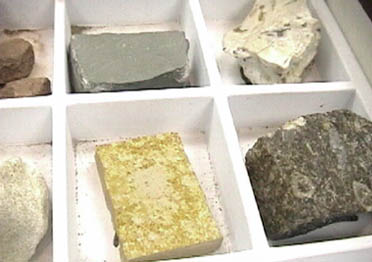

Two of these samples show the large variations in particle size indicative of an unsorted sedimentation process.

The top three samples show uniform small particle size, indicating a well sorted sedimentation process and deposition a sizeable distance from the source.